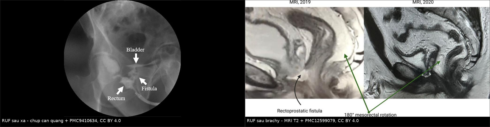
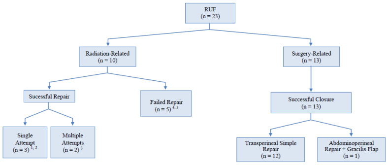
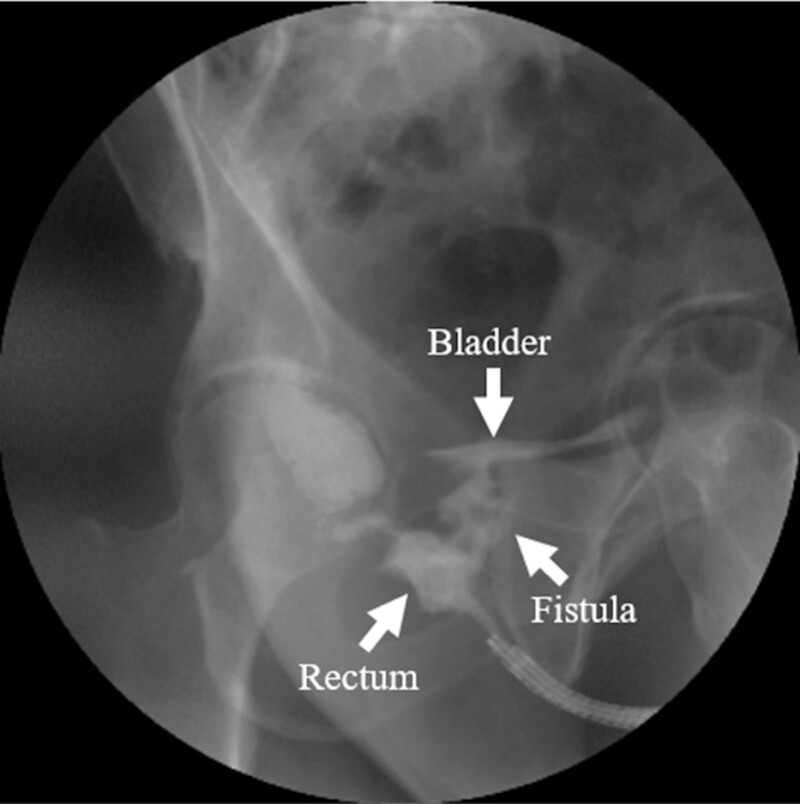
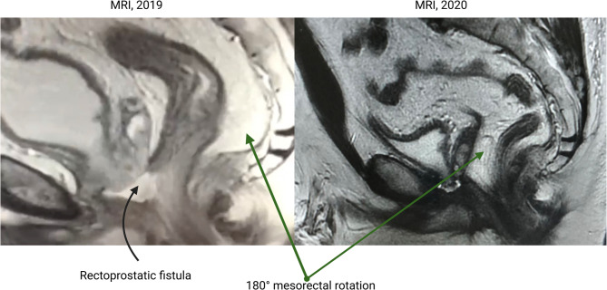
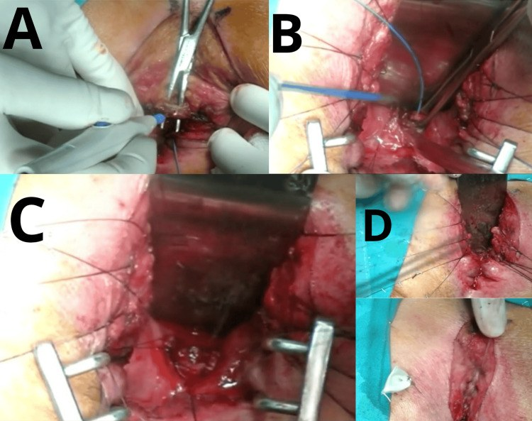

3103 — Rò trực tràng – niệu đạo sau xạ trị tiền liệt tuyến / Radiation-induced rectourethral fistula (RUF)
Tags: pattern:ro pattern:ro-nieu-sinh-duc pattern:viem-sau-xa vung:truc-trang vung:tuyen-tien-liet vung:tieu-khung protocol:CT-bang-quang-can-quang protocol:MRI-chau incidentaloma:khong
Mức chắc chắn (certainty): tổng hợp y văn (literature synthesis) — số liệu chính từ một đoàn hệ đa trung tâm 72 ca (PMC12971167), một loạt 23 ca có thuật toán điều trị (PMC8432514), một loạt 23 ca ghép cơ thon (gracilis) (PMC11964384), và ba báo cáo ca có ảnh (PMC9410634; PMC12599079; PMC13457398). Chưa có thử nghiệm ngẫu nhiên; thời điểm và thứ tự phẫu thuật là thực hành đồng thuận, chỗ suy luận được ghi rõ.
Câu chốt: RUF sau xạ là "lỗ rò của mô đã xạ" — không phải một lỗ thủng đơn thuần. Ba con số quyết định: (1) tỷ lệ chung 0,4–3% sau điều trị ung thư tiền liệt tuyến, và hơn một nửa RUF hiện nay liên quan xạ trị/brachytherapy/cryo (PMC8432514; PMC11964384); (2) xạ làm thời gian lành và tỷ lệ thành công tụt hẳn: vá kín 50% ở nhóm đã xạ so với 100% ở nhóm chỉ mổ (PMC8432514), và ở 72 ca đa trung tâm, lành hoàn toàn 83,8% (rò sớm) vs 42,9% (rò muộn) (PMC12971167); (3) hơn 3 cm ở mô đã xạ gần như không lành bằng chuyển vạt — phải tính cắt toàn bộ tiểu khung (exenteration) (PMC11964384).
1. Tổng quan bệnh học – cơ chế hình ảnh (TẠI SAO)
1.1 Giải phẫu: "tầng" nào bị rò quyết định tên gọi và đường mổ
- Trực tràng nằm sau tuyến tiền liệt và niệu đạo màng; giữa chúng chỉ có vách trực tràng – tiền liệt (rectoprostatic septum / Denonvilliers' fascia). Xạ trị tiền liệt tuyến chiếu liều cao vào đúng vách này — đây là "điểm nóng" của rò.
- Rò trực tràng – niệu đạo (RUF): lỗ rò mở vào niệu đạo tiền liệt/màng, dưới bàng quang → nước tiểu và phân gặp nhau ở tầng thấp.
- Rò trực tràng – bàng quang (rectovesical fistula): lỗ rò mở vào bàng quang, thường sau cắt bàng quang hoặc xạ rất rộng → khác đường vào và khác cách xử trí.
- Rò đại tràng – bàng quang (colovesical): từ đại tràng sigma, bệnh cảnh viêm túi thừa, không liên quan niệu đạo.
- Vì vậy câu hỏi đầu tiên trên hình ảnh không phải "có rò không" mà là "rò từ trực tràng vào tầng nào của đường niệu".
1.2 TẠI SAO xạ trị gây rò — và vì sao vết rò không tự lành
- Xạ gây viêm nội mạc mạch (endarteritis obliterans): mạch máu nhỏ bị dày – tắc dần trong nhiều tháng đến nhiều năm; mô trở nên thiếu oxy (hypoxia), xơ hóa, giảm tế bào sinh sản. Đây là lý do:
- Thời gian tiềm tàng dài: rò xuất hiện 9 tháng sau xạ ngoài 74 Gy (PMC9410634), 1 năm sau brachytherapy (PMC12599079), có thể muộn hơn nữa.
- Mô không lành: thiếu mạch nuôi + xơ → miệng nối không bao giờ liền nếu chỉ khâu trực tiếp, đặc biệt khi có nhiễm.
- Liều tại chỗ rất cao: liều tới cổ bàng quang và niệu đạo sau trong các phác đồ EBRT ± brachytherapy được ghi nhận 60–155 Gy (PMC8432514) — vượt xa ngưỡng dung nạp của trực tràng.
- Yếu tố làm nặng thêm: hút thuốc, đái tháo đường, bệnh mạch máu (ca báo cáo: thromboangiitis obliterans làm rò xuất hiện sau 9 tháng, PMC9410634), phẫu thuật tiểu khung trước đó, nhiễm trùng, thiếu máu, suy dinh dưỡng.
- Hậu quả sinh lý: phân và nước tiểu trộn → nhiễm khuẩn niệu tái diễn, viêm bàng quang, nhiễm trùng huyết, viêm mô hoại tử (Fournier); đau và rò nước tiểu ra trực tràng làm bệnh nhân không thể sinh hoạt bình thường.
1.3 Vật lý hình ảnh: vì sao CT thường quy bỏ sót, và cái gì nhìn thấy
- CT có cản quang tĩnh mạch đơn thuần chỉ thấy dày vách trực tràng – tiền liệt, bọt khí trong bàng quang, dịch quanh tiền liệt — không chứng minh được đường rò. Bọt khí trong bàng quang có thể do ống thông, nội soi, nhiễm khuẩn sinh hơi, không đặc hiệu.
- CT bàng quang – cản quang (CT cystography): bơm dung dịch cản quang pha loãng vào bàng quang qua ống thông, chụp lát mỏng 1–2 mm thì muộn; nếu có rò, cản quang đi từ bàng quang/niệu đạo sang trực tràng. Độ nhạy phụ thuộc thể tích bơm, áp lực, hướng đường rò; rò nhỏ, chéo, hoặc bị bóng ống thông bịt → âm tính giả.
- Chụp cản quang trực tràng (contrast enema): bơm cản quang tan trong nước từ trực tràng; thấy đường rò đi ra trước vào niệu đạo/bàng quang (hình dưới). Đây là cách xác nhận kinh điển, nhưng không nên bơm áp lực cao khi đang nhiễm trùng/đau nhiều.
- MRI tiểu khung: T2W lát mỏng 3 mm thấy đường rò tăng tín hiệu (dịch), khiếm khuyết thành trực tràng, ổ dịch/áp-xe giữa trực tràng và tiền liệt; T1 sau tiêm + fat-sat thấy thành đường rò ngấm thuốc. MRI còn trả lời câu hỏi không thể trả lời trên CT: mức xơ hóa do xạ, hoại tử tiền liệt, tình trạng cơ thắt, kích thước lỗ rò — tất cả quyết định chọn đường mổ.
- TẠI SAO MRI T2 sáng: đường rò chứa dịch/nước tiểu (nhiều proton tự do, T2 dài) → tăng tín hiệu; mô xơ do xạ giảm tín hiệu T2 và ngấm thuốc muộn → vùng xơ dày xung quanh lỗ rò là dấu hiệu "mô đã xạ", tiên lượng lành kém.
1.4 Dịch tễ và kết cục (số liệu định lượng)
- Tỷ lệ RUF sau điều trị ung thư tiểu khung: 0,4–3% (PMC8432514); 0,5–3,3% trong đoàn hệ 72 ca (PMC12971167).
- Hơn 50% RUF hiện nay do xạ trị, brachytherapy hoặc cryo điều trị ung thư tiền liệt tuyến (PMC11964384).
- Loạt 23 ca (4 trung tâm): tuổi 57–79, trung vị 68; theo dõi trung vị 54 tháng (18–115); tất cả được mở đại tràng chuyển lưu tạm + mở bàng quang trên xương mu; vá kín 78% toàn nhóm, nhưng nhóm đã xạ 5/10 (50%) so với nhóm chỉ mổ 13/13 (100%); vạt chen (interposition flap) dùng 60% ở nhóm xạ so với 7,7% ở nhóm mổ (p = 0,019) (PMC8432514).
- Đoàn hệ 72 ca: rò sớm ≤ 31 ngày (37 ca) vs rò muộn > 31 ngày (35 ca). Lành hoàn toàn 83,8% vs 42,9%; phải chuyển lưu tiêu hóa vĩnh viễn 13,5% vs 48,5%; ghép cơ thon thành công 83% vs 40%; York-Mason 71% vs 33% (PMC12971167).
- Tối đa 31% RUF do xạ phải đại tràng vĩnh viễn trong một số loạt (PMC8432514).
- Loạt 8 ca tổn thương trực tràng sau cắt tiền liệt tuyến (10 năm, bệnh viện vùng): 3 ca phát hiện trong mổ, 5 ca sau mổ, xuất hiện muộn 5 ngày – 2,5 năm, khuyết < 1 – 4 cm (PMC13506524).
2. Mẫu hình + chẩn đoán phân biệt theo vị trí (gamut)
- Theo tầng rò:
- Rò niệu đạo – trực tràng (RUF): thấp, dưới bàng quang; đái ra phân/khí, đau tầng sinh môn; thường sau xạ/cắt tiền liệt tuyến.
- Rò bàng quang – trực tràng (rectovesical): cao, trên cơ thắt; phân vào bàng quang nhiều, thường sau cắt bàng quang tận gốc hoặc xạ rất rộng.
- Rò đại tràng – bàng quang (colovesical): từ sigma, bệnh nhân viêm túi thừa, không có rò niệu đạo.
- Rò trực tràng – âm đạo: nữ, sau xạ/cắt tử cung (bài 1665).
- Theo cơ chế: do xạ (mô xơ, thiếu mạch, lành kém) vs do mổ (tổn thương trực tiếp, thường sớm, lành tốt hơn) vs do bệnh (ung thư xâm lấn, Crohn, nhiễm trùng).
- Theo thời điểm: sớm ≤ 31 ngày (thường do mổ) vs muộn > 31 ngày (thường do xạ) (PMC12971167).
- Mnemonic "FISTULA": Fecaluria, Infection tái diễn, Sphincter (đánh giá trước mổ), Tissue đã xạ, Urethra (tầng rò), Length/defect size, Abscess.
3. Bảng so sánh phân biệt (ma trận đối chiếu)
| Thực thể (entity) | Hình ảnh điển hình (CT/MRI/enema) | Chốt vào (rule-in) | Chốt loại (rule-out) | Gợi ý xác nhận |
|---|---|---|---|---|
| RUF sau xạ | Đường rò T2 sáng từ trực tràng trước vào niệu đạo tiền liệt/màng; vách dày, xơ T2 tối; khuyết thành trực tràng | Cản quang đi từ niệu đạo/bàng quang sang trực tràng + tiền sử xạ + đái ra phân/khí | Rò mở trên bàng quang hoặc có đường rò từ sigma → không phải RUF | MRI lát mỏng + CT cystography + nội soi hai chiều |
| RUF sau mổ (sớm) | Khuyết thành trực tràng – niệu đạo sau cắt tiền liệt tuyến, ổ dịch nhỏ, không xơ nhiều | Xuất hiện ≤ 31 ngày sau mổ, mô mềm bình thường | Xơ hóa dày, tiền sử xạ → thể muộn, tiên lượng xấu hơn | Enema/CT cystography; mổ thì đầu |
| Rò trực tràng – bàng quang | Cản quang từ bàng quang vào trực tràng, trên tầng niệu đạo; thường sau cắt bàng quang | Lỗ rò ở thành sau bàng quang, không qua niệu đạo | Cản quang chỉ ở niệu đạo → RUF | CT cystography, MRI |
| Rò đại tràng – bàng quang | Sigma dính bàng quang, khí trong bàng quang, không có rò niệu đạo | Rò từ đại tràng, bệnh nhân viêm túi thừa | Có đường rò trực tràng – niệu đạo → loại | CT bụng – chậu, nội soi |
| Rò trực tràng – âm đạo | Đường rò ra thành sau âm đạo, không vào niệu đạo | Khám âm đạo thấy lỗ rò, khí/phân qua âm đạo | Bệnh nhân nam hoặc lỗ rò ra niệu đạo → loại | Khám + MRI + enema |
| Hoại tử/áp-xe tiền liệt | Ổ dịch hoại tử trong tiền liệt, khí, bờ ngấm thuốc; có thể chưa thủng trực tràng | Khí + dịch trong tiền liệt sau brachytherapy | Có đường rò rõ ràng → đã có RUF, không chỉ áp-xe | MRI, CT, nội soi; cấy dịch |
| Viêm trực tràng xạ có loét | Loét nông, phù nề, mạch máu giãn, không có đường rò | Loét nhưng không thấy đường rò trên MRI/enema | Có đường rò → RUF | Nội soi + sinh thiết loại trừ tái phát |

Trái: cản quang trực tràng — cản quang đi từ trực tràng qua đường rò vào bàng quang/niệu đạo (PMC9410634, CC BY 4.0). Phải: MRI T2 2019 có rò trực tràng – tiền liệt, và 2020 sau khi xoay 180° mạc treo trực tràng làm vạt chen (PMC12599079, CC BY 4.0). Ảnh ghép letterbox.4. Protocol chụp + phân loại + chiến lược xử trí
- Bước 1 — xác nhận lâm sàng: đái ra phân (fecaluria) và đái ra khí (pneumaturia) gần như chẩn đoán; ngoài ra nhiễm khuẩn niệu tái diễn, đau tầng sinh môn, rò nước tiểu qua hậu môn, viêm da quanh hậu môn.
- Bước 2 — nội soi hai chiều: soi bàng quang – niệu đạo tìm lỗ rò ở niệu đạo tiền liệt/màng; soi trực tràng/sigma tìm lỗ rò và sinh thiết nếu bờ loét không đều (loại tái phát u). Nghiệm pháp xanh methylene: đặt bông/gạc trong trực tràng, bơm xanh methylene vào niệu đạo/bàng quang → bông xanh = rò.
- Bước 3 — hình ảnh:
- CT bàng quang – cản quang + cản quang trực tràng (nếu dung nạp): lát mỏng 1–2 mm, cửa sổ mô mềm + xương.
- MRI tiểu khung 1,5–3 T: T2W lát mỏng 3 mm (trục, sagittal, coronal vuông góc vách), T1W sau tiêm + fat-sat, DWI nếu nghi áp-xe/u; đo kích thước lỗ rò (mm) và độ dày xơ.
- Không bơm áp lực cao khi có sốt, đau nhiều, áp-xe — nguy cơ làm bùng phát nhiễm trùng huyết.
- Phân loại dùng trong thực hành: sớm (≤ 31 ngày) vs muộn (> 31 ngày) (PMC12971167); đơn giản vs phức tạp (đã xạ, > 3 cm, đã vá thất bại, cơ thắt kém, có áp-xe); theo tầng (niệu đạo vs bàng quang).
- Nguyên tắc điều trị:
- Kiểm soát nhiễm trước: dẫn lưu áp-xe, kháng sinh, chuyển lưu phân (đại tràng/ileostomy) + dẫn lưu nước tiểu (suprapubic cystostomy), nuôi dưỡng; trong loạt 23 ca, 100% được chuyển lưu tạm cả hai đường (PMC8432514).
- Trì hoãn vá dứt điểm: thực hành đồng thuận là chờ 3–6 tháng sau khi kiểm soát nhiễm; với mô đã xạ, các loạt lớn mổ xác định 6–13 tháng sau chuyển lưu (ca brachytherapy: 13 tháng) (PMC12599079) — đây là kinh nghiệm thực hành, không phải ngưỡng từ thử nghiệm ngẫu nhiên.
- Chọn đường mổ: York-Mason xuyên cơ thắt cho rò thấp – giữa, mô tương đối tốt; đường tầng sinh môn cho rò thấp; đường bụng – tầng sinh môn cho rò cao/phức tạp; ghép cơ thon (gracilis) khi đã xạ < 3 cm** hoặc **không xạ > 2 cm; đã xạ > 3 cm → tỷ lệ lành rất thấp, phải tính cắt toàn bộ tiểu khung (PMC11964384).
- Chỉ đóng da trong thì cuối và không rút dẫn lưu quá sớm; theo dõi rò tái phát bằng enema/MRI trước khi đóng hậu môn nhân tạo.
flowchart TD
A[Đái ra phân/khí sau xạ hoặc mổ tiền liệt tuyến] --> B[Xác nhận: nội soi 2 chiều + xanh methylene]
B --> C[CT bàng quang cản quang + MRI chậu lát mỏng 3 mm]
C --> D{Tầng rò?}
D -->|Niệu đạo tiền liệt/màng| E[RUF]
D -->|Bàng quang trên cơ thắt| F[Rò trực tràng-bàng quang: đường vào khác]
E --> G{Có nhiễm trùng/áp-xe/sốt?}
G -->|Có| H[Kháng sinh + dẫn lưu + đại tràng chuyển lưu + suprapubic]
G -->|Không| I{Đã xạ? kích thước?}
H --> I
I -->|Đã xạ < 3 cm| J[Chờ 6-13 tháng: York-Mason hoặc gracilis]
I -->|Đã xạ > 3 cm| K[Cắt toàn bộ tiểu khung / chuyển lưu vĩnh viễn]
I -->|Không xạ, > 2 cm| L[Gracilis hoặc York-Mason]
I -->|Rò sớm, nhỏ, mô tốt| M[Thử bảo tồn: dẫn lưu + chuyển lưu, đánh giá lại 3 tháng]
J --> N[Kiểm tra enema/MRI trước khi đóng stoma]
L --> N
M --> N

Kết cục 23 ca: nhóm đã xạ (n = 10) chỉ 3 ca lành sau một lần vá, 2 ca cần nhiều lần, 5 ca thất bại; nhóm chỉ mổ (n = 13) lành 13/13 (12 ca vá đơn thuần qua tầng sinh môn, 1 ca cần vạt cơ thon qua đường bụng – tầng sinh môn). Nguồn: PMC8432514, CC BY 4.0.5. Biến thể bình thường và cạm bẫy
- Khí trong bàng quang ≠ rò: gặp sau đặt ống thông, nội soi, nhiễm khuẩn sinh hơi; ngược lại rò nhỏ có thể không có khí. Chẩn đoán dựa vào triệu chứng + hình ảnh đường rò, không dựa riêng vào khí.
- "Đái ra phân" bị gọi là tiêu chảy/không kiểm soát: ở người cao tuổi sau xạ, phân lỏng ra niệu đạo dễ bị quy cho tiêu chảy do xạ hoặc suy cơ thắt; hỏi thẳng "nước tiểu có lẫn phân/khí không".
- Loét do xạ vs tái phát u: bờ loét không đều, cứng, chảy máu → sinh thiết trước khi kết luận "chỉ là viêm trực tràng xạ". Bỏ sót tái phát là sai lầm chết người.
- Vá sớm trên mô đã xạ: khâu trực tiếp trong mô xơ, thiếu mạch → thất bại gần như chắc chắn; cần vạt chen (cơ thon, mạc nối, mạc treo trực tràng xoay).
- Đóng hậu môn nhân tạo quá sớm: chưa kiểm tra enema/MRI mà đóng stoma → rò tái phát, nhiễm trùng huyết; chờ 3–6 tháng (xạ: lâu hơn) và xác nhận lành.
- Bỏ sót hẹp niệu đạo/cổ bàng quang đi kèm: sau xạ, RUF thường đi cùng hẹp niệu đạo và hoại tử tiền liệt; chỉ vá rò mà không giải quyết hẹp → bí tiểu, nhiễm trùng tái diễn (nối bài 1666).
- Vật liệu chen (spacer) hydrogel: có thể gây loét trực tràng rồi rò (PMC13447750) — hỏi tiền sử can thiệp, không chỉ hỏi "xạ hay không".
- Bệnh mạch máu nền: thromboangiitis obliterans làm rò xuất hiện sớm và nặng hơn (PMC9410634); đánh giá yếu tố nguy cơ mạch máu trước khi hứa "vá được".
6. Tự lượng giá — Blind Quiz
Ca 1 — Nam 73 tuổi, xạ ngoài 74 Gy vì ung thư tiền liệt tuyến 9 tháng trước; nay đái ra phân và khí.

- Hỏi: mô tả đường đi của cản quang? Chẩn đoán? Vì sao rò xuất hiện muộn đến 9 tháng?
Bấm để hiện đáp án
- Findings: cản quang từ trực tràng đi qua một đường rò vào bàng quang/niệu đạo (mũi tên "Fistula"), một phần cản quang đọng ở bàng quang. Đây là rò trực tràng – đường niệu.
- Chẩn đoán: RUF sau xạ trị tiền liệt tuyến.
- Vì sao muộn: xạ gây viêm nội mạc mạch tiến triển nhiều tháng → thiếu máu nuôi, xơ hóa, mô mỏng dần rồi thủng; ca này còn có thromboangiitis obliterans làm mạch máu nặng thêm.
- Nguồn ảnh: Ohira K et al., Medicine (Baltimore) 2022 — PMC9410634 — Fig. 2, CC BY 4.0.
Ca 2 — Nam 54 tuổi, brachytherapy 1 năm trước, đái ra phân; MRI trước và sau mổ.

- Hỏi: dấu hiệu trên MRI 2019? Vì sao phải chuyển lưu phân trước rồi mới vá? Vai trò của xoay 180° mạc treo trực tràng?
Bấm để hiện đáp án
- Findings 2019: đường rò/ổ dịch giữa trực tràng và tiền liệt, tăng tín hiệu T2, khuyết thành trước trực tràng — tương ứng rò trực tràng – tiền liệt; ca này có khuyết thành trực tràng trước 1,6 cm.
- Vì sao chuyển lưu trước: kiểm soát nhiễm và làm sạch vùng mổ; mô đã xạ không chịu được miệng nối ướt, nhiễm. Sau sigmoidostomy, vá xác định được thực hiện 13 tháng sau.
- Vai trò xoay mạc treo: đưa mạc treo trực tràng ra sau làm vạt chen tự thân giữa miệng nối trực tràng và đường niệu, giảm rò tái phát; ảnh 2020 cho thấy mạc treo đã xoay 180°.
- Nguồn ảnh: Goncharov A et al., BMC Urol 2025 — PMC12599079 — Fig. 4, CC BY 4.0.
Ca 3 — Rò tầng thấp, mô đã xạ, đã chuyển lưu; chọn đường vào nào?

- Hỏi: kể tên 4 thì trong ảnh. Ưu/nhược của đường vào này so với đường bụng? Khi nào không chọn?
Bấm để hiện đáp án
- Các thì: (A) bộc lộ sau xuyên cơ thắt sau cắt xương cụt; (B) xác định đường rò trực tràng – niệu đạo; (C) đóng nhiều lớp sau cắt đường rò; (D) đóng da/tầng sinh môn (hoàn tất).
- Ưu: đi thẳng vào vách trực tràng – niệu đạo, không mở ổ bụng — rất hữu ích khi bụng "thù địch" do nhiều lần mổ (chỉ định trong ca báo cáo).
- Nhược/không chọn: rò rất cao, áp-xe lớn, mô xạ nặng > 3 cm cần vạt cơ/gracilis hoặc cắt tiểu khung; nguy cơ suy cơ thắt nếu cơ thắt đã kém — phải đánh giá trước mổ.
- Nguồn ảnh: Morillo Lemus LE, Gerardo Benito CM, Cureus 2026 — PMC13457398 — Fig. 1, CC BY 4.0.
Bài liên quan chéo
- 111 – Tắc ruột non sau xạ trị tiểu khung
- 112 – Chảy máu trực tràng muộn sau xạ trị
- 1665 – Rò trực tràng – âm đạo sau xạ trị
- 1666 – Hẹp niệu quản sau và rò sau xạ trị
- 1872 – Thoát vị Littre (túi thừa Meckel trong túi thoát vị)
Ảnh
images/3103_ro-truc-trang-nieu-dao_CanQuang_PMC9410634.jpg— cản quang trực tràng, PMC9410634, CC BY 4.0.images/3103_ro-truc-trang-nieu-dao_MRI_PMC12599079.jpg— MRI T2 trước/sau mổ, PMC12599079, CC BY 4.0.images/3103_ro-truc-trang-nieu-dao_Mo_PMC13457398.jpg— các thì York-Mason, PMC13457398, CC BY 4.0.images/3103_ro-truc-trang-nieu-dao_SoDo_PMC8432514.jpg— thuật toán 23 ca, PMC8432514, CC BY 4.0.images/composite_ruf.jpg— ảnh ghép cản quang + MRI, letterbox, PMC9410634 + PMC12599079, CC BY 4.0.- Chi tiết giấy phép từng file:
images/CREDITS.md.
Không dùng để chẩn đoán độc lập khi chưa có người hướng dẫn.